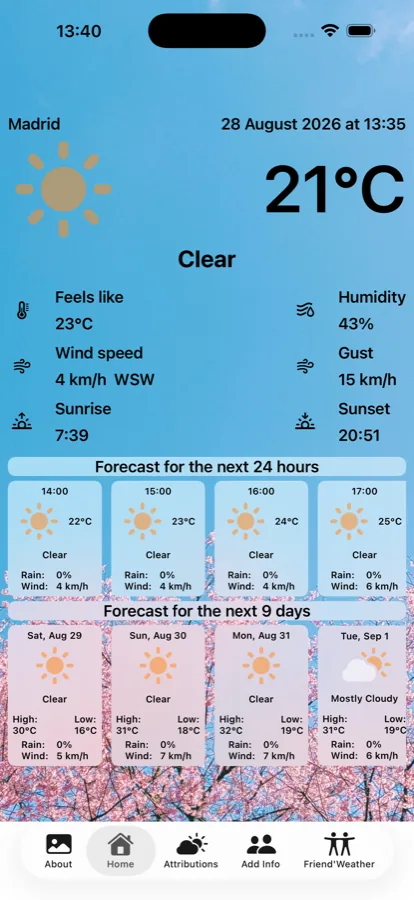
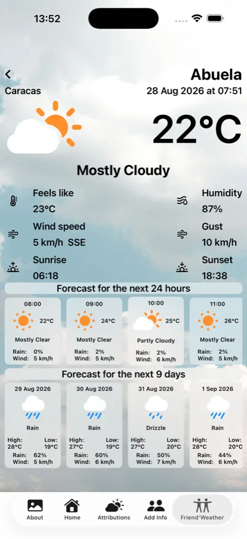
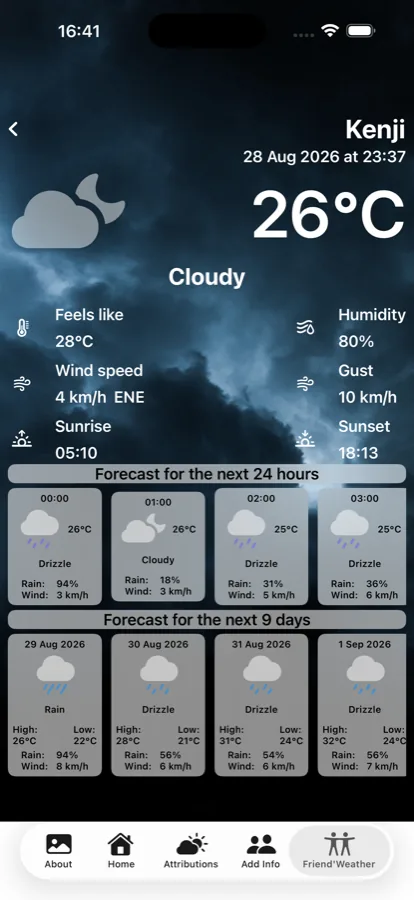

In Venezuela, "Llegó Pacheco" — "Pacheco has arrived" — means the cold has come. The phrase remembers Antonio Pacheco, a flower farmer who came down from Galipán, on the El Ávila hill, to sell flowers in Caracas at the end of each November. His arrival lined up with the start of the cold season, and the name stuck to the season itself. The app is named after the phrase, not the farmer.
SwiftUI and Angular can't share a runtime, so the two versions can't share code for the things that make the app feel like itself: the rain and snow that fall over a photograph, the wind that slowly pans it, the gradient that keeps the text readable on top. What they share instead is the numbers — the same particle counts, the same scrim strength — changed in both places at once or not at all. It's a discipline rather than a compiler guarantee, and it has held.
Most of the app is in step this way. What isn't yet: fourteen of the photographs date from an earlier pass and are lower-resolution than the rest — visible if you look closely, not at a glance. They're on the list.
The iPhone app gets its forecasts from Apple's WeatherKit, which authenticates through the developer account itself. A website made of static files has no such account to hide behind, so the web version asks Open-Meteo instead, which needs no key at all. Why that one constraint shapes the whole web build — and why the two versions can occasionally disagree about tomorrow — is the subject of Pacheco is now on the web.
iPhone. SwiftUI, Swift 6, iOS 17.2 and later. WeatherKit for forecasts, SwiftData for saved friends, MapKit for place search. 45 tests.
Web. Angular 22 and TypeScript. Installable, and it keeps working offline — the app, both languages and every photograph you've already seen. Open-Meteo for forecasts. 190 tests.
The two are within two lines of each other in size: about 4,300 lines apiece.
Pacheco on the
App Store — free, for iPhone, iOS 17.2 or later.
Pacheco in the browser — any device, nothing to
install.